CẨM NANG VŨNG TÀU
Nếu bạn đang lên kế hoạch cho một chuyến du lịch đến Vũng Tàu và muốn tìm những địa điểm chụp hình đẹp, thì thành phố biển này chắc chắn sẽ làm bạn mê mẩn. Với những cảnh quan thiên nhiên hùng vĩ và các công trình kiến trúc độc đáo, Vũng Tàu hứa hẹn mang đến cho bạn những khoảnh khắc tuyệt vời và những bức ảnh đáng nhớ.
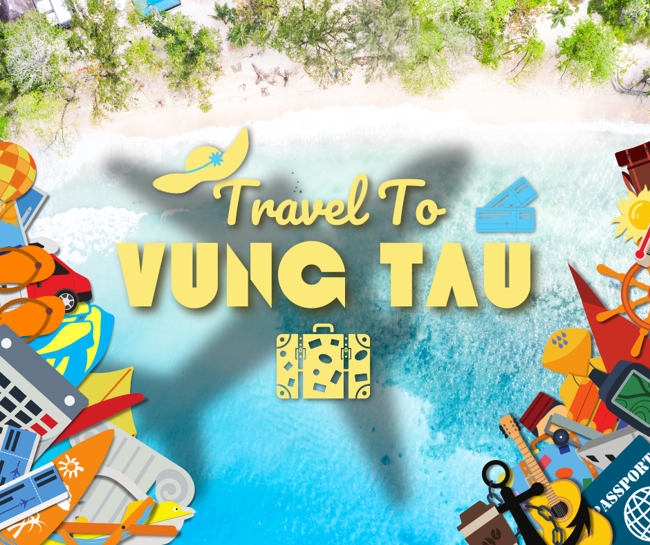
Từ bãi biển thơ mộng, ngọn hải đăng lãng mạn đến những di tích lịch sử đầy ấn tượng, Vũng Tàu là một thiên đường cho những ai yêu thích chụp ảnh và khám phá vẻ đẹp tuyệt vời của thiên nhiên và con người. Hãy chuẩn bị máy ảnh và sẵn sàng ghi lại những kỷ niệm đẹp nhất tại nơi đây!
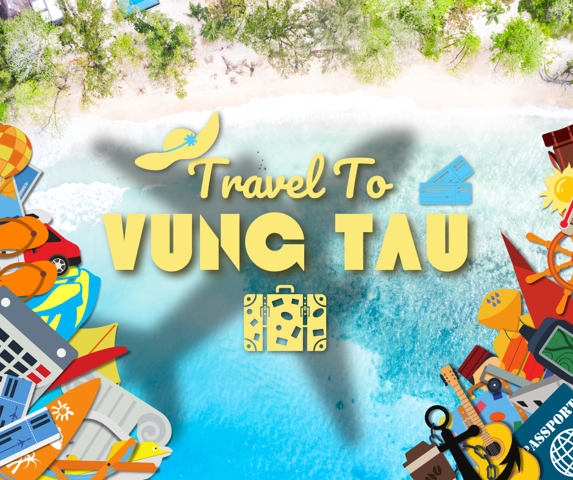
Từ bãi biển thơ mộng, ngọn hải đăng lãng mạn đến những di tích lịch sử đầy ấn tượng, Vũng Tàu là một thiên đường cho những ai yêu thích chụp ảnh và khám phá vẻ đẹp tuyệt vời của thiên nhiên và con người. Hãy chuẩn bị máy ảnh và sẵn sàng ghi lại những kỷ niệm đẹp nhất tại nơi đây!
Vũng Tàu - Địa điểm chụp hình
Mũi Nghinh Phong
Mũi Nghinh Phong, một trong những điểm đến nổi bật tại Vũng Tàu, là thiên đường cho những ai yêu thích chụp ảnh. Với vị trí đắc địa nằm ngay tại mũi đất vươn dài ra biển, Mũi Nghinh Phong mang đến cho bạn những góc chụp hình tuyệt đẹp, hòa quyện giữa thiên nhiên hoang sơ và vẻ đẹp hùng vĩ của biển cả.
Điểm nhấn của Mũi Nghinh Phong chính là "Cổng Trời", một khoảng trống giữa hai bức tường đá, mở ra khung cảnh biển xanh biếc và trời cao rộng. Đứng tại đây, bạn sẽ có cảm giác như đang mở cánh cửa dẫn vào thiên đường, tạo nên những bức ảnh đầy ấn tượng và lãng mạn.
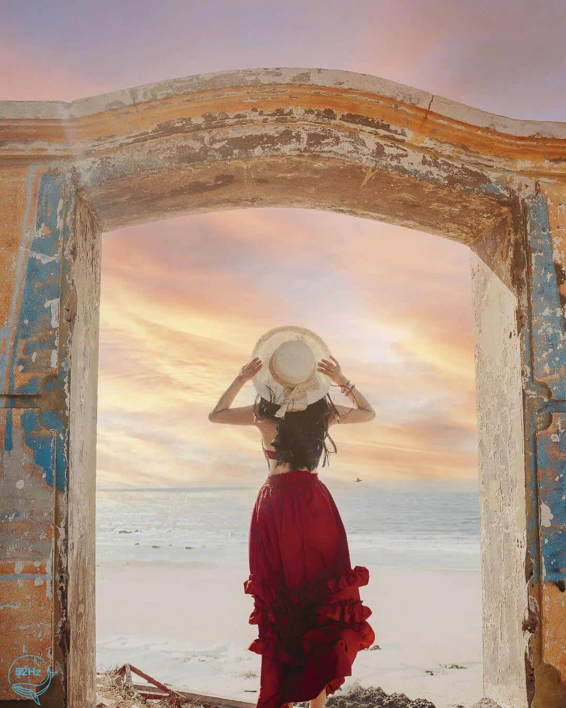
Bên cạnh đó, Mũi Nghinh Phong còn có những bãi biển hoang sơ với cát trắng mịn và những tảng đá lớn kỳ vĩ, tạo nên nhiều góc chụp đa dạng và độc đáo. Bạn có thể chụp hình khi bình minh ló dạng, ánh nắng rực rỡ chiếu xuống mặt biển lấp lánh, hay khi hoàng hôn buông xuống, bầu trời nhuốm màu hồng tím thơ mộng.
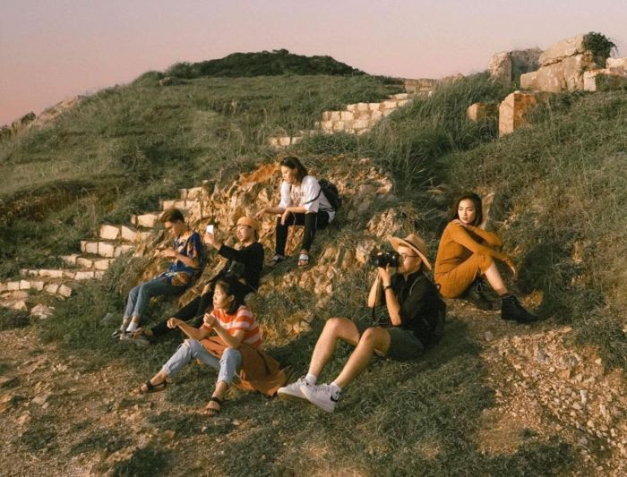
Với phong cảnh tuyệt đẹp và không gian yên bình, Mũi Nghinh Phong chắc chắn là địa điểm lý tưởng để bạn tạo nên những bức ảnh kỷ niệm đáng nhớ trong chuyến hành trình khám phá Vũng Tàu. Chắc chắn rằng mỗi bức ảnh tại đây sẽ đều mang đậm dấu ấn của thiên nhiên hùng vĩ và sự bình yên hiếm có.
Điểm nhấn của Mũi Nghinh Phong chính là "Cổng Trời", một khoảng trống giữa hai bức tường đá, mở ra khung cảnh biển xanh biếc và trời cao rộng. Đứng tại đây, bạn sẽ có cảm giác như đang mở cánh cửa dẫn vào thiên đường, tạo nên những bức ảnh đầy ấn tượng và lãng mạn.
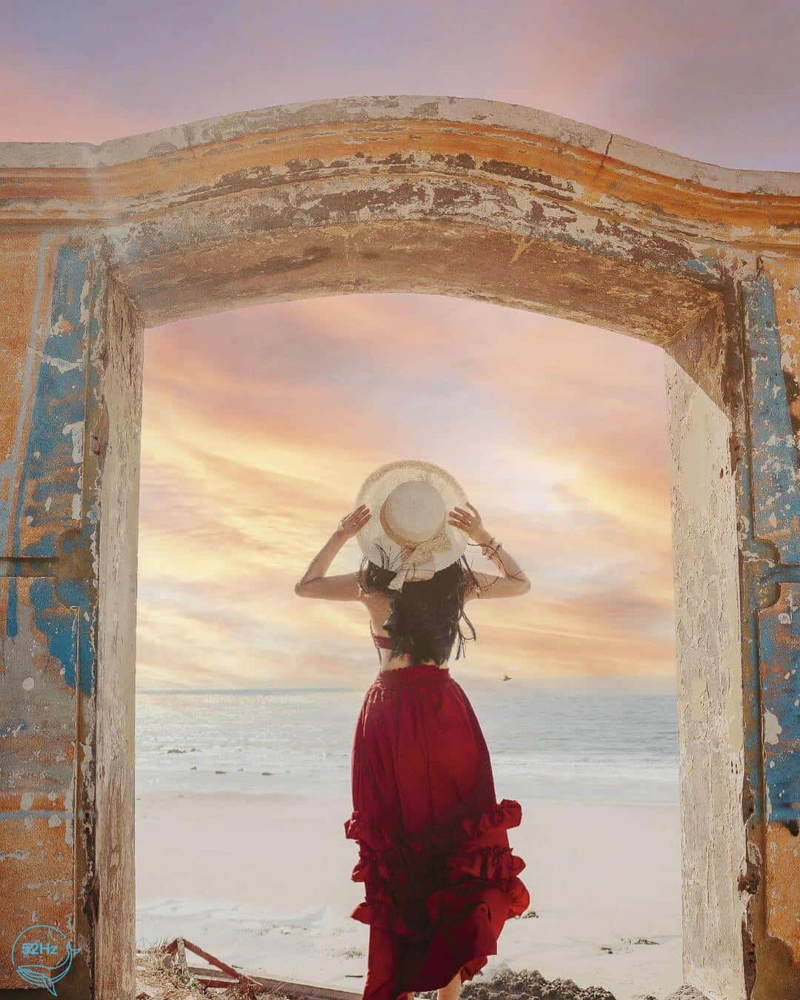
Bên cạnh đó, Mũi Nghinh Phong còn có những bãi biển hoang sơ với cát trắng mịn và những tảng đá lớn kỳ vĩ, tạo nên nhiều góc chụp đa dạng và độc đáo. Bạn có thể chụp hình khi bình minh ló dạng, ánh nắng rực rỡ chiếu xuống mặt biển lấp lánh, hay khi hoàng hôn buông xuống, bầu trời nhuốm màu hồng tím thơ mộng.
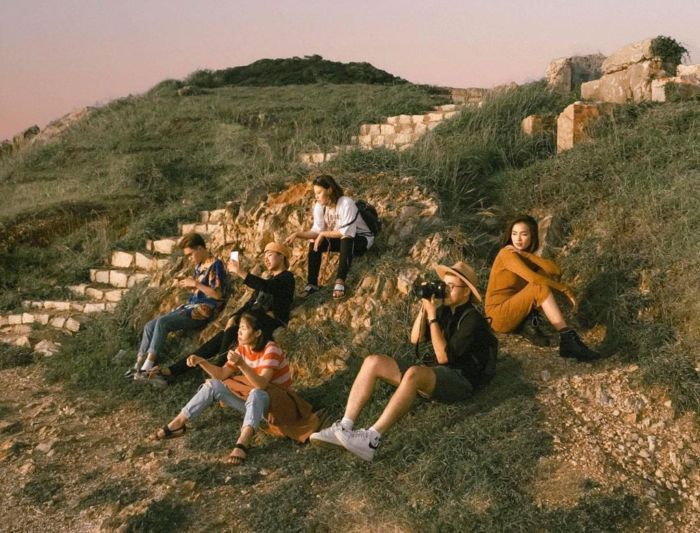
Với phong cảnh tuyệt đẹp và không gian yên bình, Mũi Nghinh Phong chắc chắn là địa điểm lý tưởng để bạn tạo nên những bức ảnh kỷ niệm đáng nhớ trong chuyến hành trình khám phá Vũng Tàu. Chắc chắn rằng mỗi bức ảnh tại đây sẽ đều mang đậm dấu ấn của thiên nhiên hùng vĩ và sự bình yên hiếm có.
- Địa chỉ: 01 Hạ Long, Vũng Tàu.
Đồi Con Heo
Đồi Con Heo tại Vũng Tàu là một địa điểm chụp ảnh không thể bỏ qua dành cho những ai yêu thích khám phá và nhiếp ảnh. Với vị trí cao, đồi Con Heo mang đến cho bạn tầm nhìn toàn cảnh thành phố biển Vũng Tàu cùng với bờ biển dài và xanh ngắt. Đặc biệt, vào những ngày nắng đẹp, từ đây bạn có thể ngắm nhìn toàn bộ cảnh biển và thành phố phía xa, tạo nên khung cảnh tuyệt đẹp cho những bức ảnh của bạn.
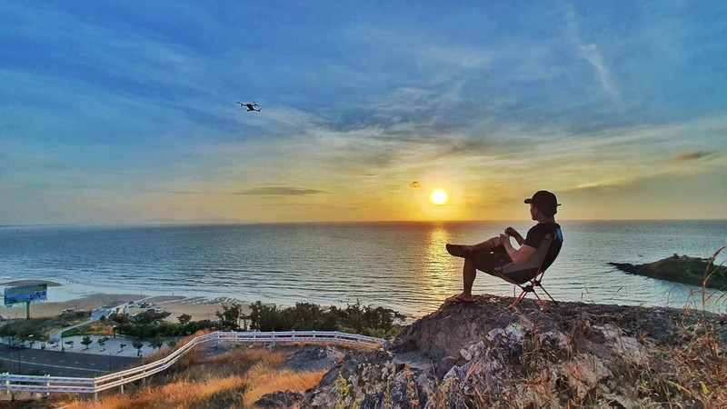
Khung cảnh hoang sơ và hùng vĩ của Đồi Con Heo, với những tảng đá lớn và cây cỏ um tùm, là nền lý tưởng để bạn tạo ra những bức ảnh phong cách mạo hiểm và độc đáo. Thêm vào đó, khi hoàng hôn buông xuống, ánh nắng vàng nhẹ trải dài trên đồi, tạo ra những khoảnh khắc lãng mạn và khó quên.
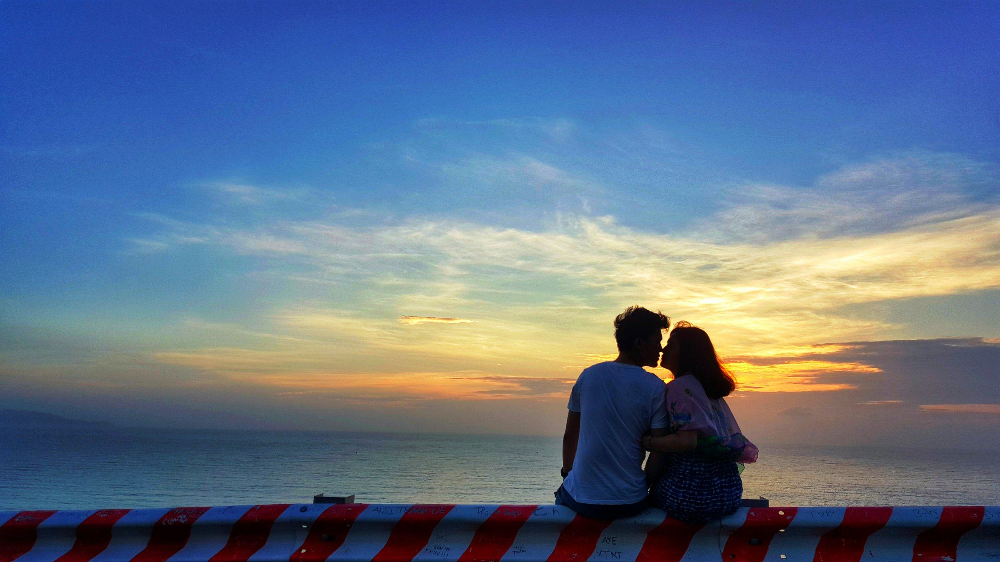
Không chỉ có cảnh quan tuyệt đẹp, Đồi Con Heo còn thu hút bởi sự bình yên và tĩnh lặng, là nơi lý tưởng để bạn thư giãn và tận hưởng không khí trong lành. Hãy chuẩn bị máy ảnh và sẵn sàng ghi lại những khoảnh khắc đẹp nhất tại địa điểm tuyệt vời này!
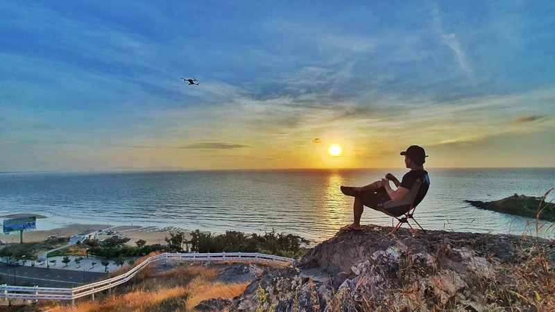
Khung cảnh hoang sơ và hùng vĩ của Đồi Con Heo, với những tảng đá lớn và cây cỏ um tùm, là nền lý tưởng để bạn tạo ra những bức ảnh phong cách mạo hiểm và độc đáo. Thêm vào đó, khi hoàng hôn buông xuống, ánh nắng vàng nhẹ trải dài trên đồi, tạo ra những khoảnh khắc lãng mạn và khó quên.
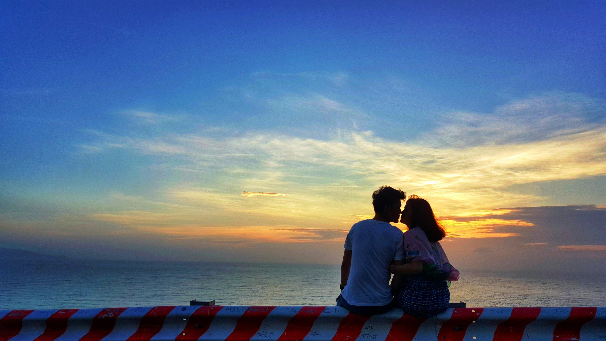
Không chỉ có cảnh quan tuyệt đẹp, Đồi Con Heo còn thu hút bởi sự bình yên và tĩnh lặng, là nơi lý tưởng để bạn thư giãn và tận hưởng không khí trong lành. Hãy chuẩn bị máy ảnh và sẵn sàng ghi lại những khoảnh khắc đẹp nhất tại địa điểm tuyệt vời này!
- Địa chỉ: Cuối hẻm 222 Phan Châu Trinh, Phường 2, thành phố Vũng Tàu.
Hẻm 444 Trần Phú
Hẻm 444 Trần Phú, tọa lạc tại thành phố biển Vũng Tàu, là điểm đến không thể bỏ qua đối với những ai yêu thích nghệ thuật và nhiếp ảnh. Con hẻm này mang một vẻ đẹp mộc mạc, đơn sơ, nhưng lại đầy cuốn hút với không gian yên bình và gần gũi, phản ánh cuộc sống thường nhật của người dân địa phương.
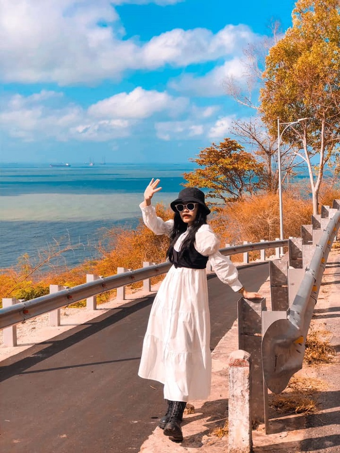
Đặc biệt, hẻm 444 vào buổi chiều tà khi ánh hoàng hôn buông xuống, tạo nên một khung cảnh lãng mạn và thơ mộng. Ánh nắng vàng nhẹ nhàng phủ lên mọi ngõ ngách, mang lại một khung cảnh lung linh, tạo nên những bức ảnh tuyệt đẹp và đầy chất nghệ thuật.
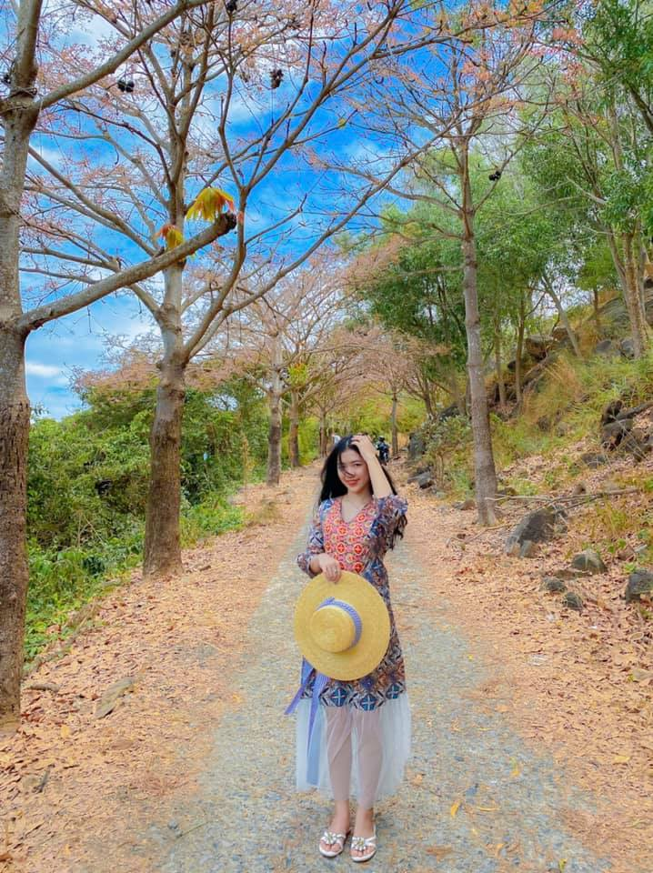
Không gian nhỏ bé với những lối đi lát đá cổ kính, những cánh cửa gỗ nhuốm màu thời gian cùng với những góc nhìn mới lạ sẽ giúp bạn tạo ra những bức ảnh độc đáo và ấn tượng. Hẻm 444 Trần Phú chắc chắn sẽ là nơi lý tưởng để bạn ghi lại những khoảnh khắc đẹp và lưu giữ những kỷ niệm đáng nhớ trong chuyến hành trình khám phá Vũng Tàu.
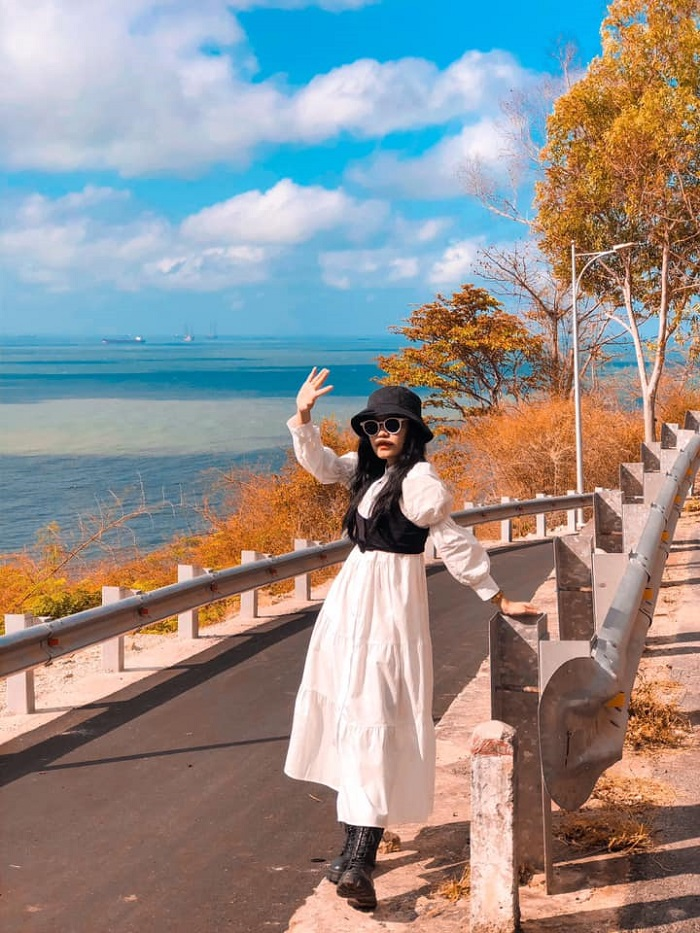
Đặc biệt, hẻm 444 vào buổi chiều tà khi ánh hoàng hôn buông xuống, tạo nên một khung cảnh lãng mạn và thơ mộng. Ánh nắng vàng nhẹ nhàng phủ lên mọi ngõ ngách, mang lại một khung cảnh lung linh, tạo nên những bức ảnh tuyệt đẹp và đầy chất nghệ thuật.
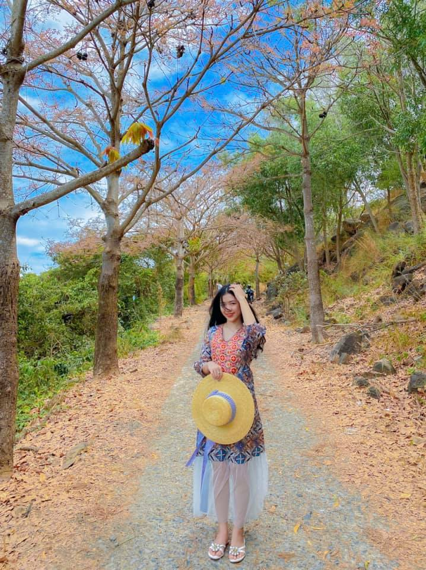
Không gian nhỏ bé với những lối đi lát đá cổ kính, những cánh cửa gỗ nhuốm màu thời gian cùng với những góc nhìn mới lạ sẽ giúp bạn tạo ra những bức ảnh độc đáo và ấn tượng. Hẻm 444 Trần Phú chắc chắn sẽ là nơi lý tưởng để bạn ghi lại những khoảnh khắc đẹp và lưu giữ những kỷ niệm đáng nhớ trong chuyến hành trình khám phá Vũng Tàu.
- Địa chỉ: Hẻm 444 Trần Phú, Phường 5, Vũng Tàu, Bà Rịa - Vũng Tàu.
Ngọn Hải Đăng Mini
Ngọn hải đăng mini tại Vũng Tàu là điểm chụp ảnh tuyệt vời với kiến trúc xinh xắn và vị trí đắc địa. Khi bình minh lên, ánh nắng dịu nhẹ chiếu sáng ngọn hải đăng, tạo nên khung cảnh sáng bừng và tươi mới. Buổi chiều, khi hoàng hôn buông xuống, ánh nắng vàng ấm áp chiếu rọi lên ngọn hải đăng, tạo ra những bức ảnh lung linh và lãng mạn.
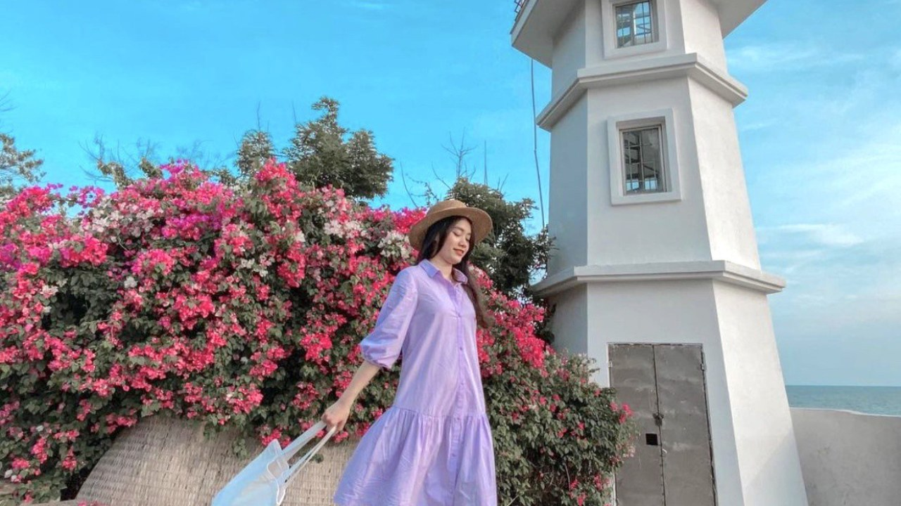
Không gian xung quanh với biển xanh, bầu trời trong và những dải cỏ xanh mướt cũng góp phần tạo nên phông nền hoàn hảo cho các bức ảnh. Bạn có thể thử nhiều góc chụp khác nhau, từ cận cảnh kiến trúc ngọn hải đăng đến toàn cảnh với thiên nhiên xung quanh.
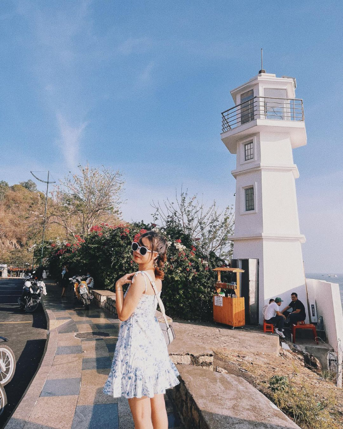
Với sự kết hợp giữa ánh sáng tự nhiên và cảnh quan tuyệt đẹp, ngọn hải đăng mini chắc chắn sẽ giúp bạn tạo nên những bức ảnh ấn tượng và đáng nhớ trong chuyến khám phá Vũng Tàu.
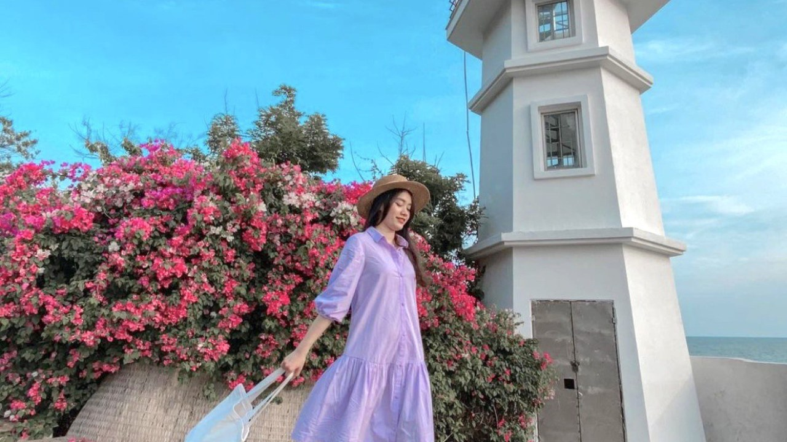
Không gian xung quanh với biển xanh, bầu trời trong và những dải cỏ xanh mướt cũng góp phần tạo nên phông nền hoàn hảo cho các bức ảnh. Bạn có thể thử nhiều góc chụp khác nhau, từ cận cảnh kiến trúc ngọn hải đăng đến toàn cảnh với thiên nhiên xung quanh.
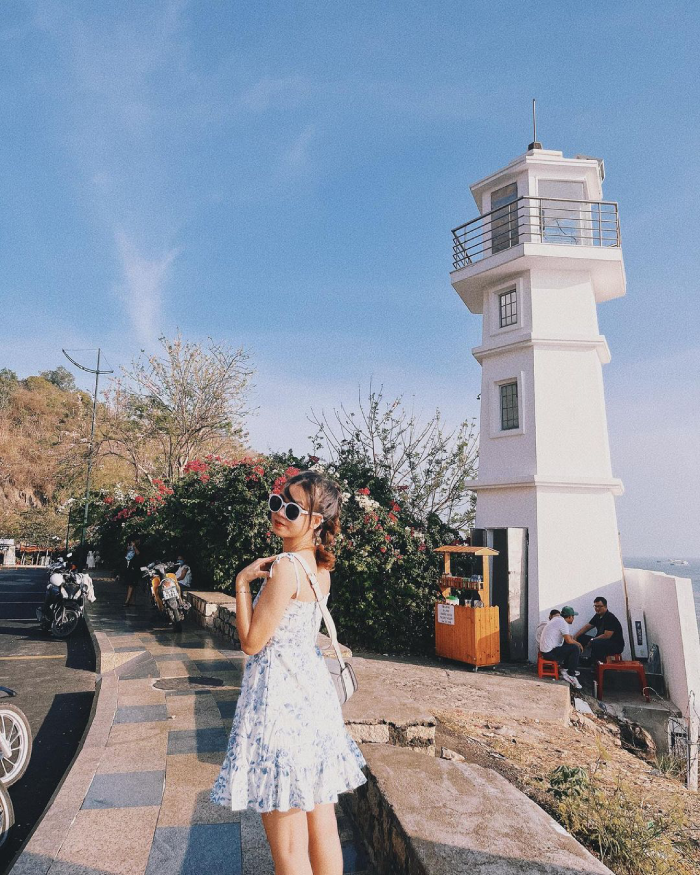
Với sự kết hợp giữa ánh sáng tự nhiên và cảnh quan tuyệt đẹp, ngọn hải đăng mini chắc chắn sẽ giúp bạn tạo nên những bức ảnh ấn tượng và đáng nhớ trong chuyến khám phá Vũng Tàu.
- Địa chỉ: 9346+Q45, Trần Phú, Phường 5, Vũng Tàu, Bà Rịa - Vũng Tàu.
Nhà thờ Song Vĩnh
Nhà thờ Song Vĩnh tại Vũng Tàu là một địa điểm lý tưởng cho những ai yêu thích chụp ảnh. Với kiến trúc cổ kính và phong cách Gothic độc đáo, nhà thờ này mang lại không gian trang nghiêm và ấn tượng cho các bức ảnh của bạn.
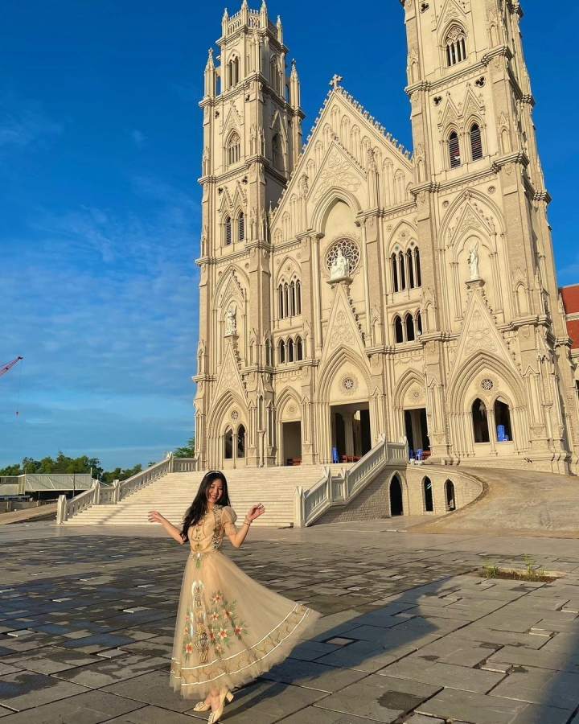
Vào buổi sáng, ánh nắng sớm chiếu qua các cửa sổ kính màu, tạo ra những dải ánh sáng lung linh và lãng mạn trên nền gạch cổ. Buổi chiều, khi hoàng hôn buông xuống, ánh nắng vàng ấm áp làm nổi bật những chi tiết kiến trúc tinh xảo, tạo nên khung cảnh đẹp mắt và đầy nghệ thuật.
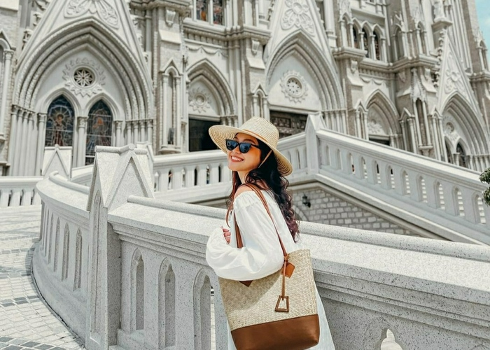
Không chỉ có kiến trúc đẹp, khuôn viên xung quanh nhà thờ với những hàng cây xanh mướt và con đường lát đá cổ kính cũng là phông nền tuyệt vời cho các bức ảnh. Đây chắc chắn là địa điểm lý tưởng để bạn ghi lại những khoảnh khắc đáng nhớ và tạo nên những bức ảnh đẹp và ấn tượng.
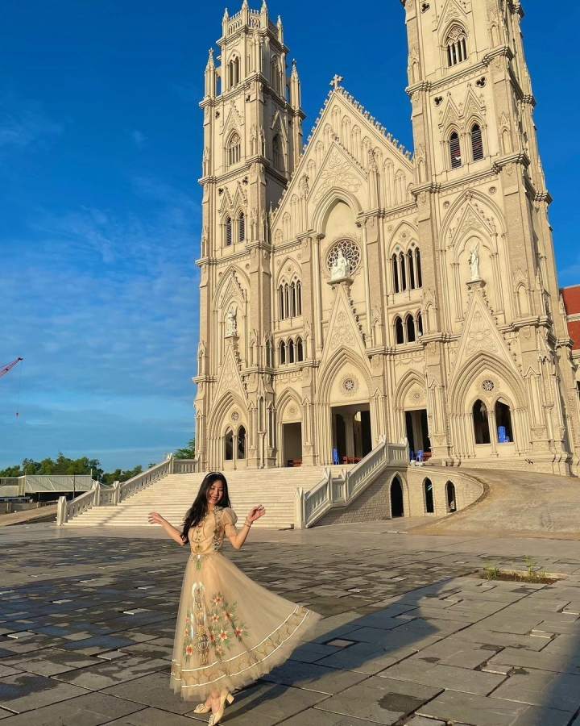
Vào buổi sáng, ánh nắng sớm chiếu qua các cửa sổ kính màu, tạo ra những dải ánh sáng lung linh và lãng mạn trên nền gạch cổ. Buổi chiều, khi hoàng hôn buông xuống, ánh nắng vàng ấm áp làm nổi bật những chi tiết kiến trúc tinh xảo, tạo nên khung cảnh đẹp mắt và đầy nghệ thuật.
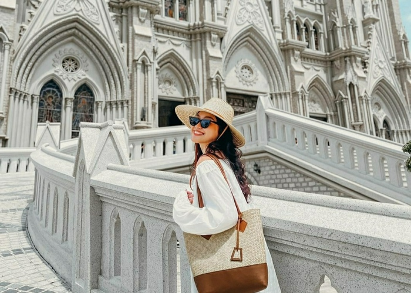
Không chỉ có kiến trúc đẹp, khuôn viên xung quanh nhà thờ với những hàng cây xanh mướt và con đường lát đá cổ kính cũng là phông nền tuyệt vời cho các bức ảnh. Đây chắc chắn là địa điểm lý tưởng để bạn ghi lại những khoảnh khắc đáng nhớ và tạo nên những bức ảnh đẹp và ấn tượng.
- Địa chỉ: QL51 Tx, KP. SONG VĨNH P, Tân Thành, Bà Rịa - Vũng Tàu.
Vũng Tàu - Địa điểm Cafe
Soho Coffee
Soho Coffee tại Vũng Tàu là một điểm đến lý tưởng cho những ai yêu thích không gian cà phê hiện đại và thoải mái. Quán được thiết kế với phong cách trẻ trung, không gian mở và nội thất gỗ ấm cúng, cùng với những góc trang trí tinh tế như tranh nghệ thuật và cây xanh, tạo nên một môi trường hoàn hảo để thưởng thức cà phê và chụp những bức ảnh đẹp.
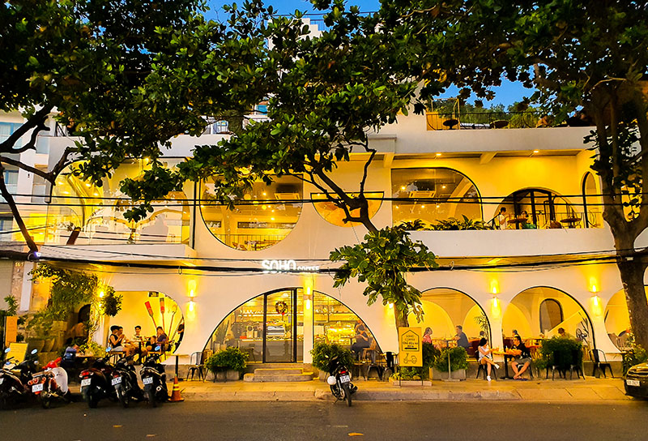
Thực đơn tại Soho Coffee rất đa dạng, bao gồm nhiều loại cà phê từ truyền thống đến hiện đại như cappuccino, latte, và espresso. Đặc biệt, quán còn có các đồ uống sáng tạo như matcha latte và sinh tố trái cây tươi ngon, cùng với bánh ngọt và món ăn nhẹ hấp dẫn. Đây chắc chắn là nơi lý tưởng để thư giãn, gặp gỡ bạn bè, và tận hưởng những giây phút bình yên bên tách cà phê.
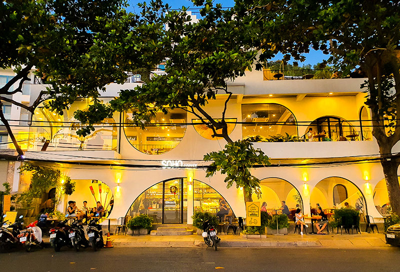
Thực đơn tại Soho Coffee rất đa dạng, bao gồm nhiều loại cà phê từ truyền thống đến hiện đại như cappuccino, latte, và espresso. Đặc biệt, quán còn có các đồ uống sáng tạo như matcha latte và sinh tố trái cây tươi ngon, cùng với bánh ngọt và món ăn nhẹ hấp dẫn. Đây chắc chắn là nơi lý tưởng để thư giãn, gặp gỡ bạn bè, và tận hưởng những giây phút bình yên bên tách cà phê.
- Địa chỉ: 66 Đường Hạ Long, Phường 2, Thành phố Vũng Tàu, Bà Rịa - Vũng Tàu.
- Giờ mở cửa: 07:00 - 23:00
- Mức giá: 29.000 VNĐ trở lên
Nali Beach Coffee
Nali Beach Coffee tại Vũng Tàu là một điểm đến lý tưởng cho những ai yêu thích cà phê và cảnh biển. Quán có thiết kế thoáng đãng, gần gũi với thiên nhiên, mang lại cảm giác thư giãn ngay từ cái nhìn đầu tiên. Với nhiều góc chụp hình đẹp, bạn có thể dễ dàng ghi lại những khoảnh khắc tuyệt vời tại đây.
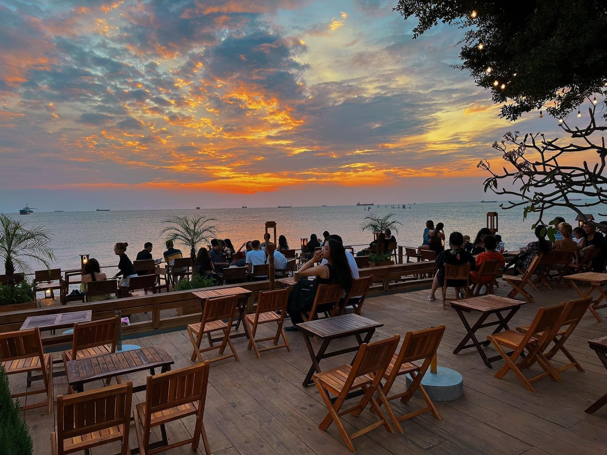
Ngoài những loại cà phê thơm ngon, quán còn phục vụ nhiều đồ uống sáng tạo như matcha latte, trà sữa, sinh tố trái cây tươi, nước ép và các loại trà thảo mộc. Bạn cũng có thể thưởng thức các món ăn nhẹ và bánh ngọt hấp dẫn, tạo nên trải nghiệm ẩm thực trọn vẹn. Không gian ngoài trời thoáng đãng với tầm nhìn ra biển giúp bạn vừa thưởng thức đồ uống, vừa thư giãn và ngắm cảnh biển tuyệt đẹp.
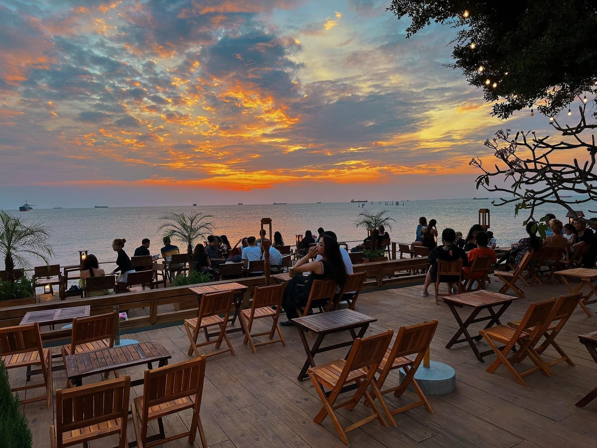
Ngoài những loại cà phê thơm ngon, quán còn phục vụ nhiều đồ uống sáng tạo như matcha latte, trà sữa, sinh tố trái cây tươi, nước ép và các loại trà thảo mộc. Bạn cũng có thể thưởng thức các món ăn nhẹ và bánh ngọt hấp dẫn, tạo nên trải nghiệm ẩm thực trọn vẹn. Không gian ngoài trời thoáng đãng với tầm nhìn ra biển giúp bạn vừa thưởng thức đồ uống, vừa thư giãn và ngắm cảnh biển tuyệt đẹp.
- Địa chỉ: 192 Trần Phú, phường 5, thành phố Vũng Tàu.
- Giờ mở cửa: 07:00 - 23:00
- Mức giá: 35.000 VNĐ trở lên
Gu Café
Gu Café nằm trên đường ven biển Trần Phú, gần Bãi Dâu, với view biển đẹp nhất. Quán có thiết kế nội thất đơn giản và không gian mở, nhiều cây xanh và ánh đèn vàng ấm áp. Menu đa dạng bao gồm cà phê truyền thống, trà trái cây, trà sữa, sữa chua và các loại đồ uống khác, với giá dao động từ 35k - 49k. Khách hàng có thể tùy chọn thêm topping để phong phú hơn cho đồ uống.
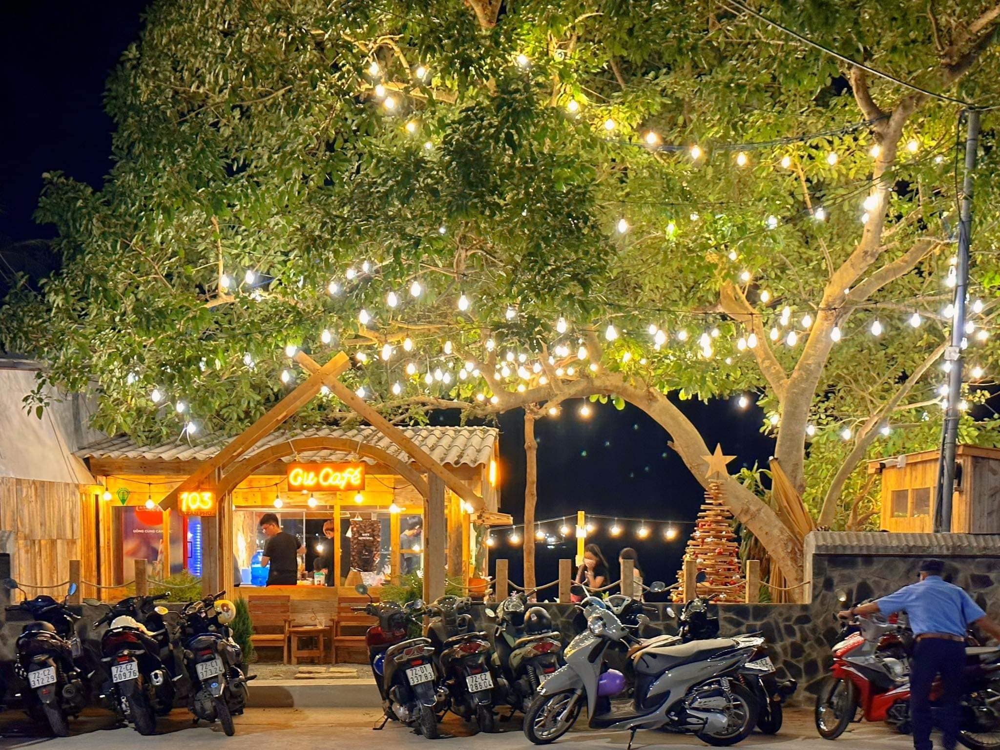
Quán có nhiều góc chụp ảnh đẹp như khu vực ngồi ngoài trời, quầy bar, và bàn gỗ nhỏ xinh. Với cấu trúc hai tầng, không gian view biển rộng và các vật dụng mộc mạc, quán rất phù hợp với phong cách chụp ảnh vintage hoặc boho. Đây là địa điểm check-in lý tưởng cho những ai muốn trải nghiệm không gian lãng mạn và gần gũi với thiên nhiên.
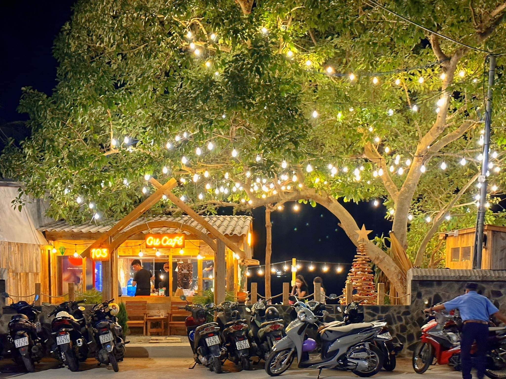
Quán có nhiều góc chụp ảnh đẹp như khu vực ngồi ngoài trời, quầy bar, và bàn gỗ nhỏ xinh. Với cấu trúc hai tầng, không gian view biển rộng và các vật dụng mộc mạc, quán rất phù hợp với phong cách chụp ảnh vintage hoặc boho. Đây là địa điểm check-in lý tưởng cho những ai muốn trải nghiệm không gian lãng mạn và gần gũi với thiên nhiên.
- Địa chỉ: 103 Trần Phú, Phường 5, Thành phố Vũng Tàu, Bà Rịa - Vũng Tàu.
- Giờ mở cửa: 07:00 - 22:00
- Mức giá: 40.000 VNĐ trở lên
Oasis Sea Coffee & Tea
Oasis Sea Coffee and Tea tại Vũng Tàu là một điểm dừng chân lý tưởng cho những ai muốn tạm rời xa sự ồn ào của thành phố. Quán nằm bên biển, mang lại khung cảnh hữu tình và thư thái, hoàn hảo để thư giãn và tận hưởng không gian yên bình. Oasis Sea Coffee and Tea nổi tiếng với không gian ấm cúng, nhân viên thân thiện và thực đơn đa dạng với các loại đồ uống như cà phê tươi ngon và nhiều loại trà khác nhau. Dù bạn muốn gặp gỡ bạn bè, tận hưởng một khoảnh khắc yên tĩnh một mình, hay đơn giản là ngắm nhìn cảnh biển đẹp, quán đều có thể đáp ứng.
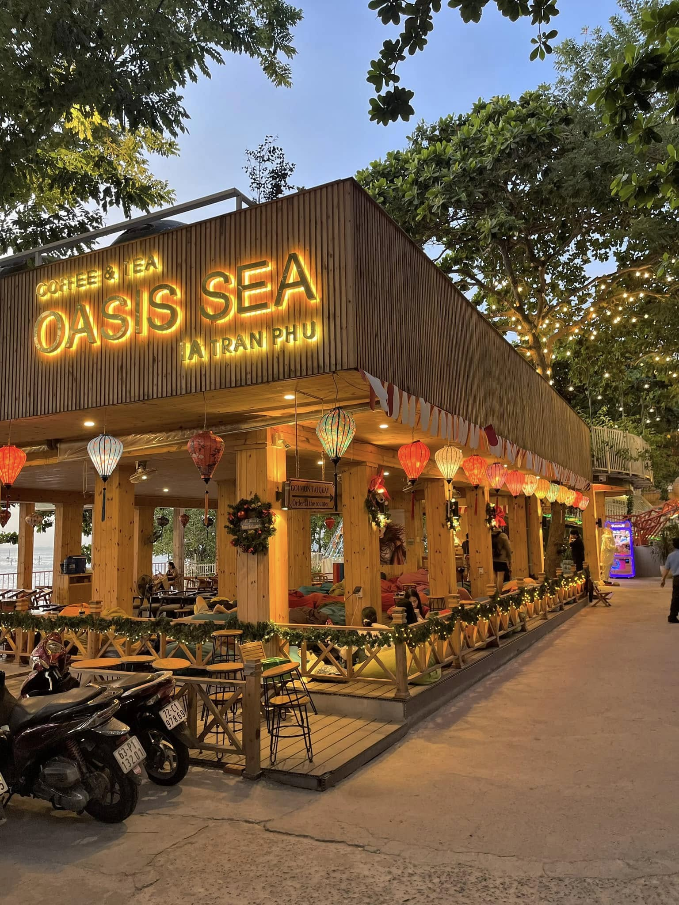
Ngoài những thức uống hấp dẫn, quán còn phục vụ nhiều loại bánh ngọt và các món ăn nhẹ ngon miệng. Từ những chiếc bánh mới nướng đến các món sandwich thơm ngon, thực đơn của quán được thiết kế để hoàn thiện không khí thư giãn và thoải mái. Dù bạn là người yêu thích cà phê, đam mê trà hay chỉ đơn giản là muốn tìm kiếm một nơi có view đẹp, Oasis Sea Coffee and Tea tại Vũng Tàu chắc chắn sẽ là một điểm đến không thể bỏ qua.
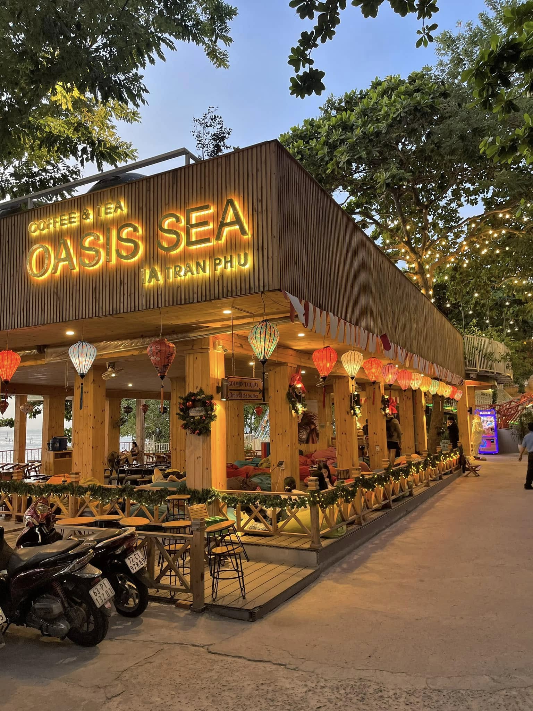
Ngoài những thức uống hấp dẫn, quán còn phục vụ nhiều loại bánh ngọt và các món ăn nhẹ ngon miệng. Từ những chiếc bánh mới nướng đến các món sandwich thơm ngon, thực đơn của quán được thiết kế để hoàn thiện không khí thư giãn và thoải mái. Dù bạn là người yêu thích cà phê, đam mê trà hay chỉ đơn giản là muốn tìm kiếm một nơi có view đẹp, Oasis Sea Coffee and Tea tại Vũng Tàu chắc chắn sẽ là một điểm đến không thể bỏ qua.
- Địa chỉ: 1A Trần Phú , Phường 1 , Thành Phố Vũng Tàu.
- Giờ mở cửa: Mở cửa 24h
- Mức giá: 45.000 VNĐ trở lên
The Hill Coffee
The Hill Coffee tại Vũng Tàu là một điểm đến lý tưởng cho những ai yêu thích không gian cà phê thoải mái và phong cách. Quán nằm trên một ngọn đồi, mang đến tầm nhìn toàn cảnh tuyệt đẹp của thành phố và biển cả. Với thiết kế hiện đại, nội thất ấm cúng và nhiều khu vực ngoài trời, The Hill Coffee tạo ra một không gian lý tưởng để thư giãn và tận hưởng những khoảnh khắc yên bình.
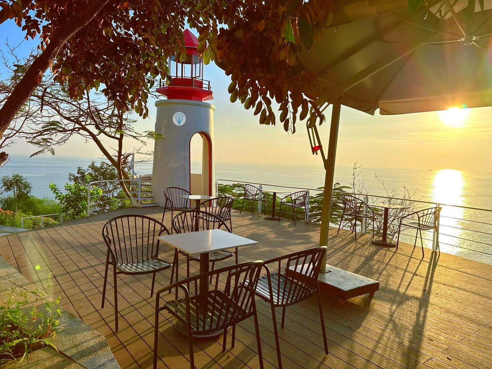
Thay vì giữ nguyên thực đơn cũ, The Hill Coffee không ngừng đổi mới và bổ sung các loại đồ uống độc đáo để đáp ứng nhu cầu đa dạng của khách hàng. Quán phục vụ nhiều loại cà phê, trà thảo mộc, và sinh tố tươi mát, cùng với các món bánh ngọt và đồ ăn nhẹ hấp dẫn. Không gian ngoài trời thoáng đãng với cây xanh mát mắt và khu vực ngồi thoải mái sẽ giúp bạn vừa thưởng thức đồ uống, vừa tận hưởng không gian thư thái và cảnh quan tuyệt đẹp. Đây chắc chắn là điểm đến không thể bỏ qua khi bạn tới Vũng Tàu.
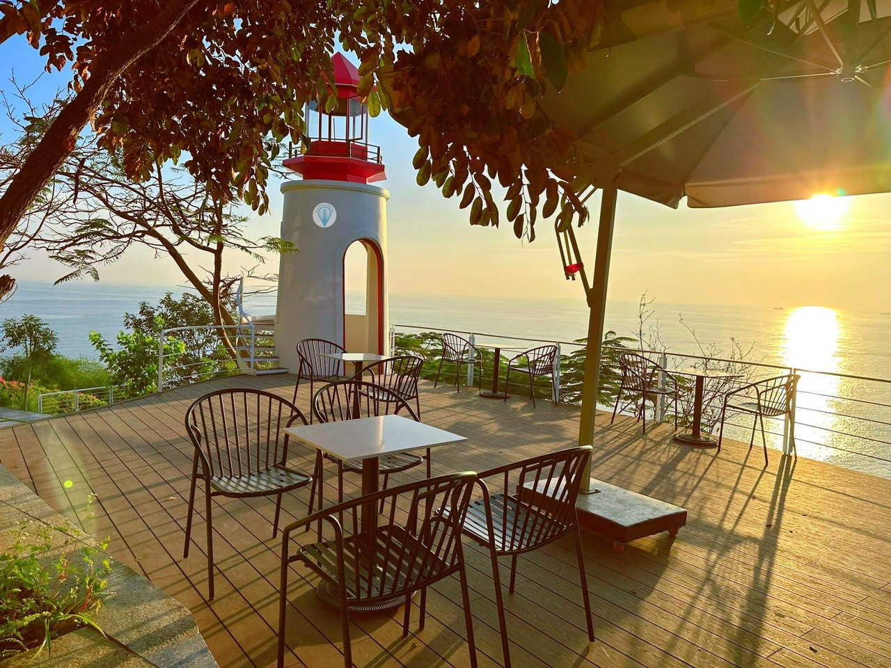
Thay vì giữ nguyên thực đơn cũ, The Hill Coffee không ngừng đổi mới và bổ sung các loại đồ uống độc đáo để đáp ứng nhu cầu đa dạng của khách hàng. Quán phục vụ nhiều loại cà phê, trà thảo mộc, và sinh tố tươi mát, cùng với các món bánh ngọt và đồ ăn nhẹ hấp dẫn. Không gian ngoài trời thoáng đãng với cây xanh mát mắt và khu vực ngồi thoải mái sẽ giúp bạn vừa thưởng thức đồ uống, vừa tận hưởng không gian thư thái và cảnh quan tuyệt đẹp. Đây chắc chắn là điểm đến không thể bỏ qua khi bạn tới Vũng Tàu.
- Địa chỉ: 2/18 Hải Đăng, Thành phố Vũng Tàu.
- Giờ mở cửa: 07:00 - 22:00
- Mức giá: 39.000 VNĐ trở lên
Vũng Tàu - Địa điểm ăn uống
Mì thảy Nghiệp Ký
Khi đến Vũng Tàu, bạn không thể bỏ lỡ cơ hội ghé qua quán ăn đêm Mì thảy Nghiệp Ký để chứng kiến tận mắt cách làm mì độc đáo. Sở dĩ được gọi là Mì thảy Nghiệp Ký vì ông chủ quán thường biểu diễn thảy vắt mì lên cao (khoảng 1,5m) sau mỗi lần trụng mì, tạo nên trải nghiệm thú vị cho thực khách. Quán phục vụ nhiều món mì hấp dẫn như mì hoành thánh, mì bò viên, mì sườn với giá cả hợp lý. Đặc biệt, món mì sườn ở đây được nhiều người yêu thích.
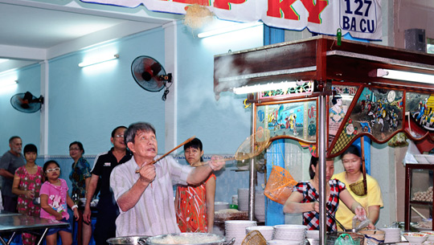 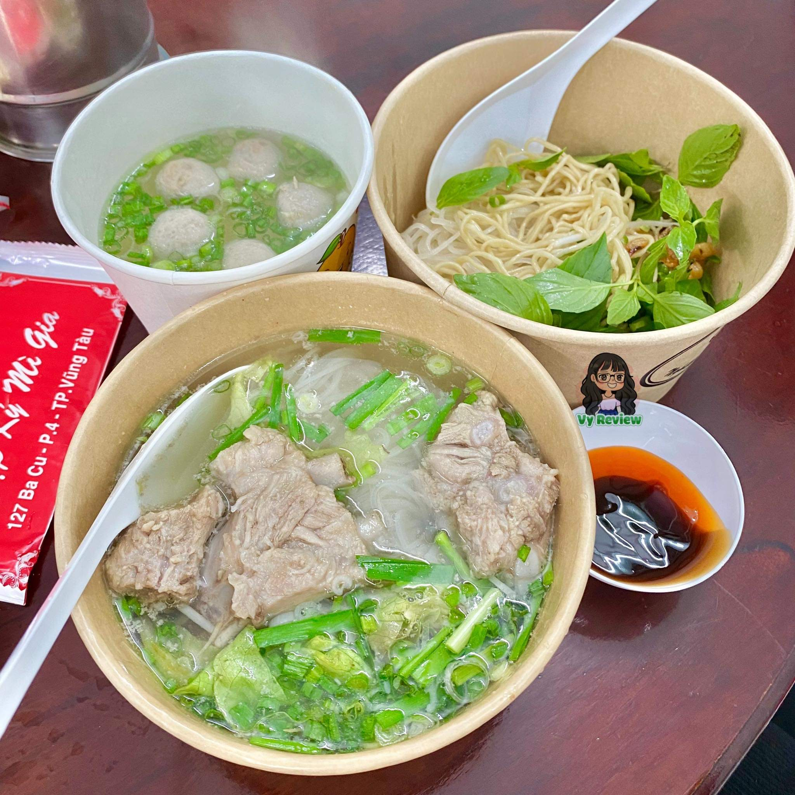
Mì tại Mì thảy Nghiệp Ký được làm theo kiểu người Hoa, nghĩa là mì được làm từ trứng gà nguyên chất, cho sợi mì dai và béo, có mùi thơm hấp dẫn. Nước dùng của mì luôn trong vắt nhưng đậm đà, được nấu từ xương hầm và sườn non, mang lại hương vị thơm ngon khó cưỡng. Mặc dù quán nằm ngoài vỉa hè, nhưng luôn đông khách nhờ vào chất lượng tuyệt vời của món ăn.
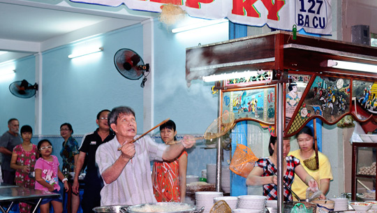 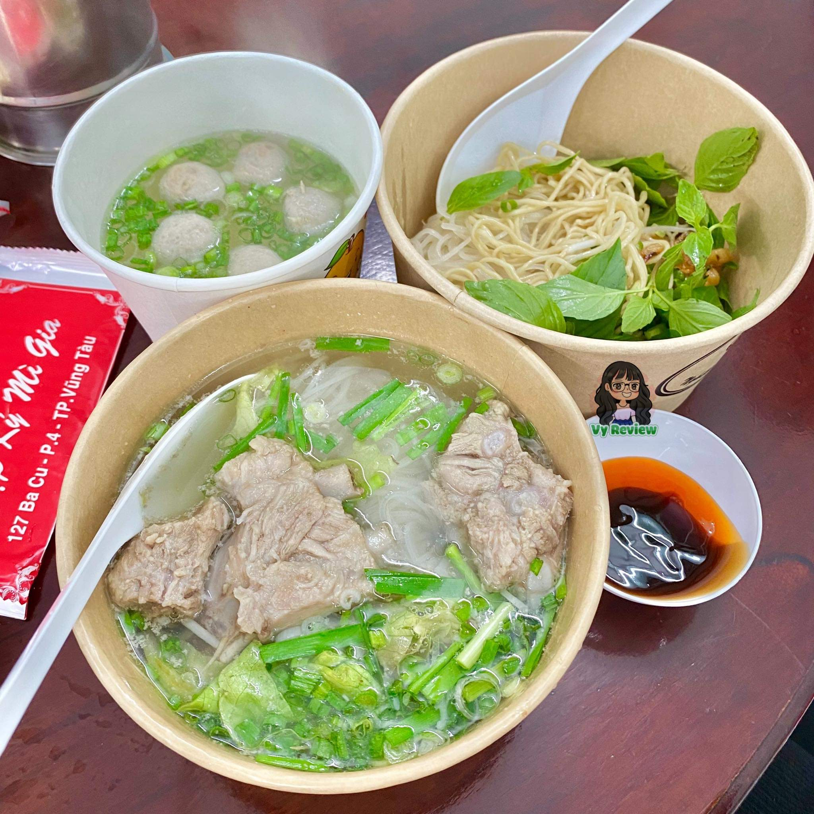
Mì tại Mì thảy Nghiệp Ký được làm theo kiểu người Hoa, nghĩa là mì được làm từ trứng gà nguyên chất, cho sợi mì dai và béo, có mùi thơm hấp dẫn. Nước dùng của mì luôn trong vắt nhưng đậm đà, được nấu từ xương hầm và sườn non, mang lại hương vị thơm ngon khó cưỡng. Mặc dù quán nằm ngoài vỉa hè, nhưng luôn đông khách nhờ vào chất lượng tuyệt vời của món ăn.
- Địa chỉ: 125 Ba Cu, TP. Vũng Tàu.
- Giờ mở cửa: 07:00 - 21:30
- Mức giá: 30.000 VNĐ - 55.000 VNĐ
Bánh khọt Gốc Vú Sữa
Bánh Khọt Gốc Vú Sữa là một trong những quán bánh khọt nổi tiếng và lâu đời nhất ở Vũng Tàu. Với hương vị độc đáo và cách chế biến truyền thống, quán đã thu hút nhiều thực khách trong và ngoài nước. Những chiếc bánh khọt giòn rụm, nhân tôm tươi ngon và nước mắm chấm đậm đà làm nên sức hấp dẫn đặc biệt của quán. Không gian quán đơn giản, thoáng mát, mang lại cảm giác thoải mái cho thực khách.
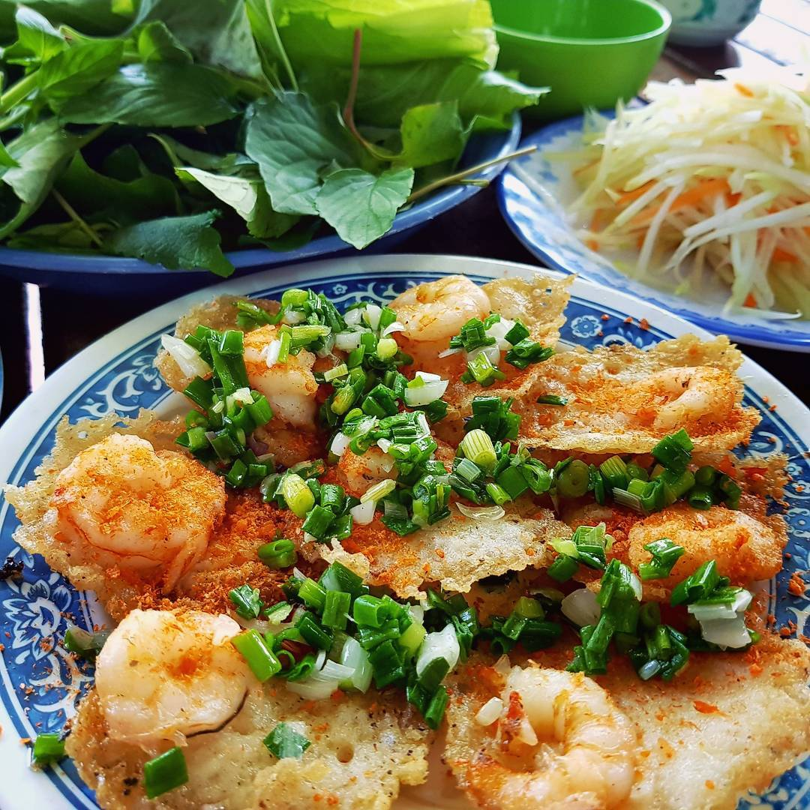
Ngoài hương vị tuyệt hảo, Bánh Khọt Gốc Vú Sữa còn được đánh giá cao về chất lượng phục vụ. Nhân viên nhiệt tình, chu đáo, luôn sẵn sàng phục vụ khách hàng. Giá cả tại quán cũng rất hợp lý, phù hợp với nhiều đối tượng thực khách. Đây chắc chắn là một địa điểm không thể bỏ qua khi bạn đến Vũng Tàu để thưởng thức món bánh khọt đặc sản.
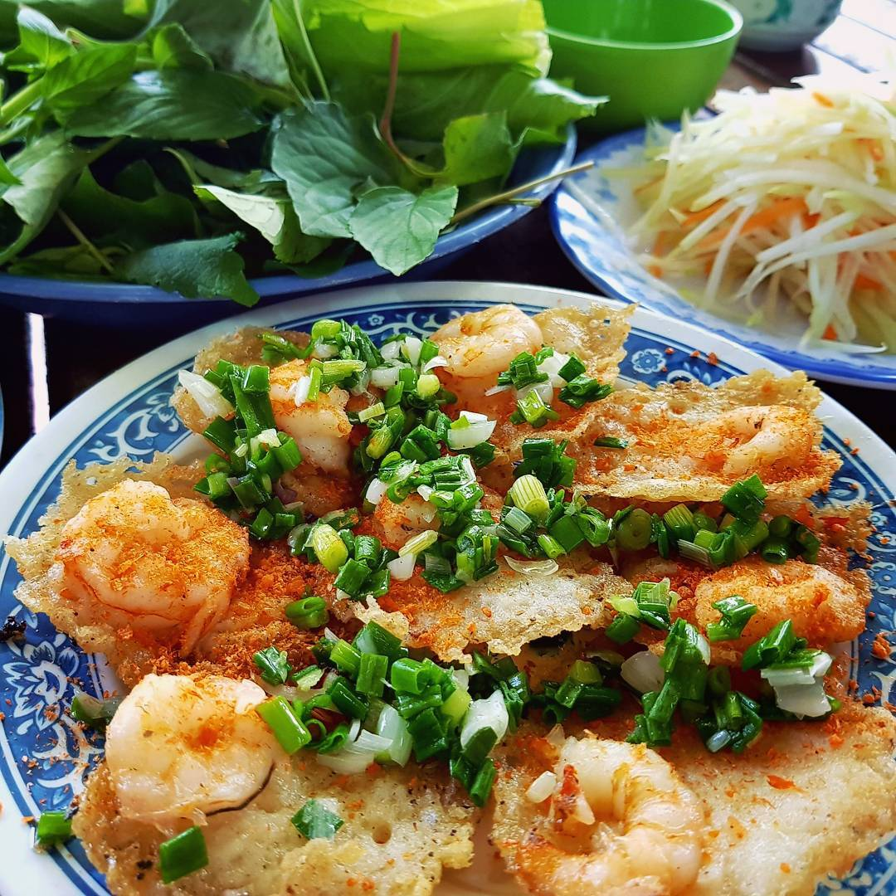
Ngoài hương vị tuyệt hảo, Bánh Khọt Gốc Vú Sữa còn được đánh giá cao về chất lượng phục vụ. Nhân viên nhiệt tình, chu đáo, luôn sẵn sàng phục vụ khách hàng. Giá cả tại quán cũng rất hợp lý, phù hợp với nhiều đối tượng thực khách. Đây chắc chắn là một địa điểm không thể bỏ qua khi bạn đến Vũng Tàu để thưởng thức món bánh khọt đặc sản.
- Địa chỉ: 14 Nguyễn Trường Tộ, phường 12, thành phố Vũng Tàu, tỉnh Bà Rịa - Vũng Tàu.
- Giờ mở cửa: 7:00 đến 15:30
- Mức giá: 30.000 VNĐ - 70.000 VNĐ
Lẩu cá đuối 66
Lẩu Cá Đuối 66 là một trong những địa điểm ẩm thực nổi tiếng ở Vũng Tàu, đặc biệt hấp dẫn với món lẩu cá đuối thơm ngon. Quán được yêu thích bởi hương vị đậm đà, nước lẩu ngọt thanh từ xương cá đuối kết hợp với các loại rau tươi xanh. Cá đuối ở đây được chế biến tươi ngon, thịt dai và không bị tanh, mang lại trải nghiệm ẩm thực khó quên cho thực khách.
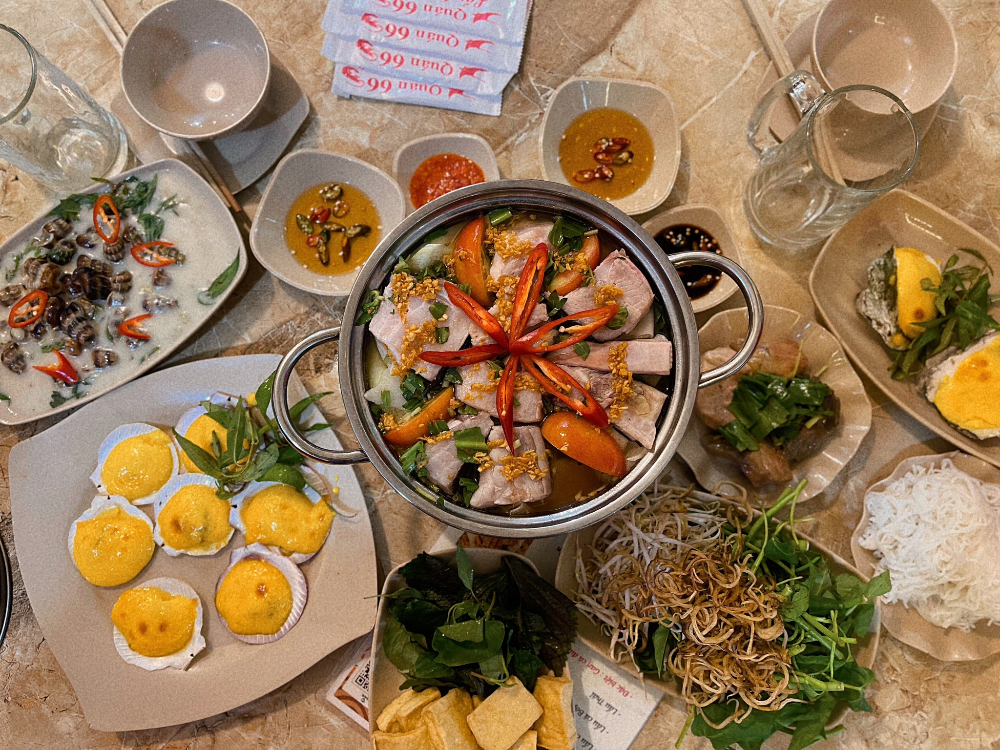
Không gian quán Lẩu Cá Đuối 66 thoáng đãng, rộng rãi, rất phù hợp cho các buổi họp mặt gia đình và bạn bè. Nhân viên phục vụ nhanh nhẹn, thân thiện, luôn sẵn sàng đáp ứng yêu cầu của khách hàng. Giá cả tại quán hợp lý, phù hợp với nhiều đối tượng thực khách. Đây chắc chắn là một điểm đến lý tưởng để thưởng thức món lẩu đặc sản và tận hưởng không khí ấm cúng cùng những người thân yêu.
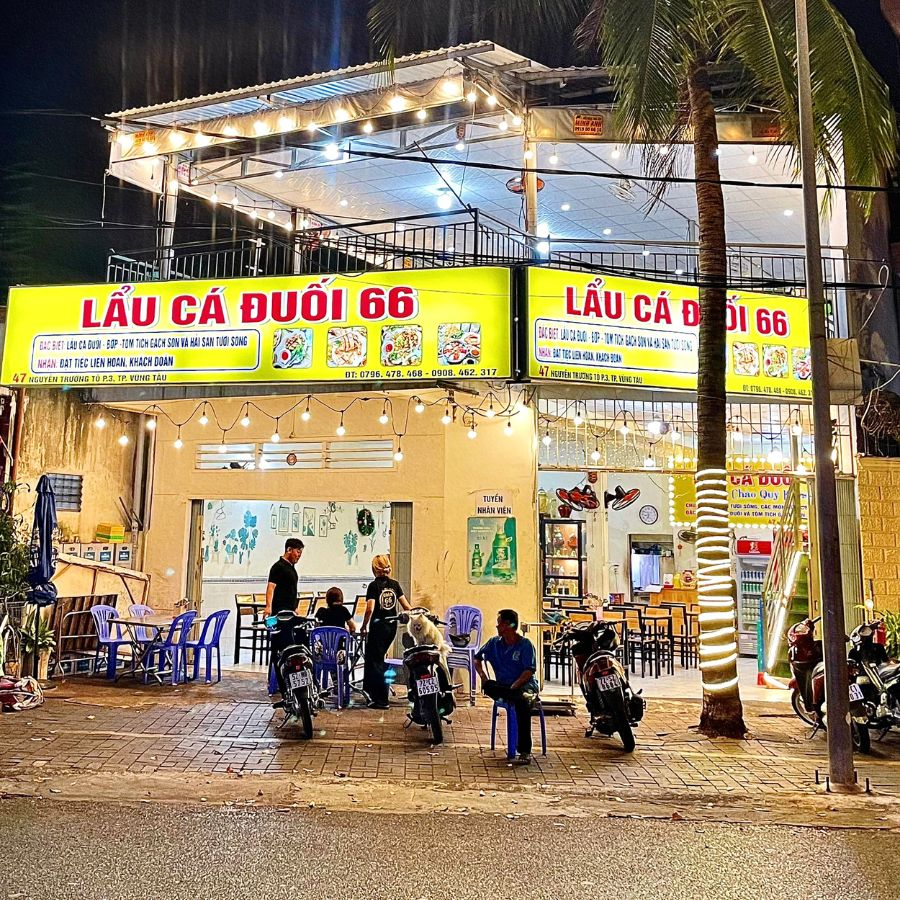
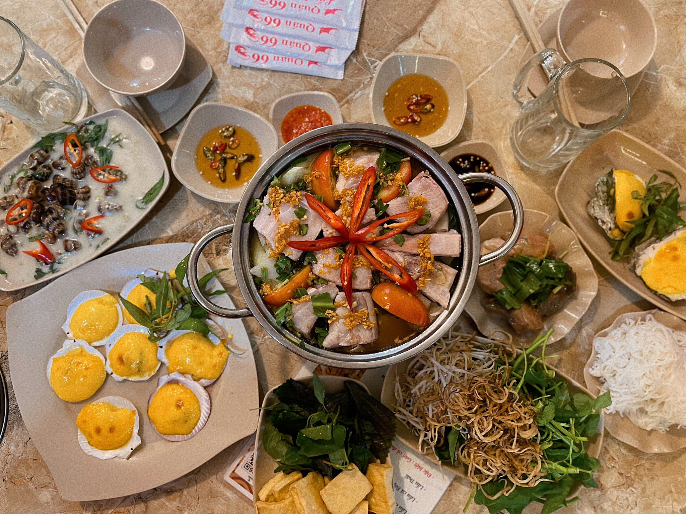
Không gian quán Lẩu Cá Đuối 66 thoáng đãng, rộng rãi, rất phù hợp cho các buổi họp mặt gia đình và bạn bè. Nhân viên phục vụ nhanh nhẹn, thân thiện, luôn sẵn sàng đáp ứng yêu cầu của khách hàng. Giá cả tại quán hợp lý, phù hợp với nhiều đối tượng thực khách. Đây chắc chắn là một điểm đến lý tưởng để thưởng thức món lẩu đặc sản và tận hưởng không khí ấm cúng cùng những người thân yêu.
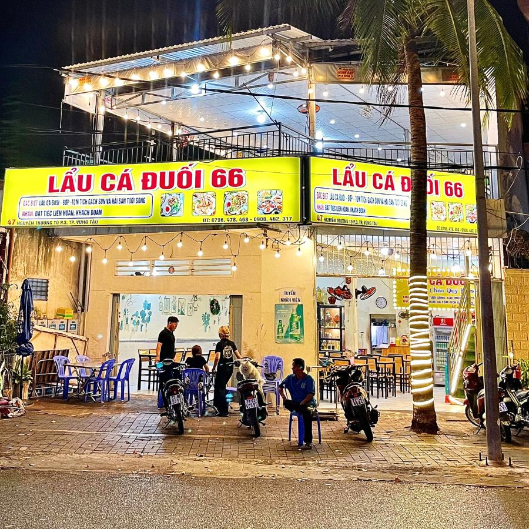
- Địa chỉ: 47 Nguyễn Trường Tộ P.3 TP. Vũng Tàu.
- Giờ mở cửa: 08:30 - 22:30
- Mức giá: 350.000 VNĐ trở lên
Donut Nga
Bánh Donut Nga - Uliana trên đường Hàn Mặc Tử là một điểm đến lý tưởng cho những ai yêu thích hương vị đặc trưng của bánh donut. Quán nổi bật với các loại bánh donut thơm ngon, được làm tươi mỗi ngày, với nhiều hương vị và kiểu dáng đa dạng. Những chiếc bánh mềm mịn, lớp phủ ngọt ngào kết hợp cùng các loại topping phong phú, chắc chắn sẽ làm hài lòng cả những thực khách khó tính nhất.
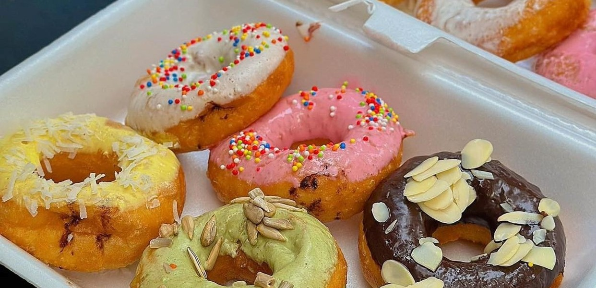
Không gian quán Bánh Donut Nga - Uliana ấm cúng và thoải mái, nhân viên phục vụ nhiệt tình và chu đáo. Đây là nơi lý tưởng để bạn cùng gia đình hoặc bạn bè thưởng thức những chiếc bánh donut ngon miệng, trò chuyện và thư giãn. Giá cả tại quán cũng rất hợp lý, phù hợp với nhiều đối tượng khách hàng. Nếu bạn có dịp ghé qua Hàn Mặc Tử, đừng quên dừng chân tại đây để trải nghiệm những chiếc bánh donut tuyệt vời.
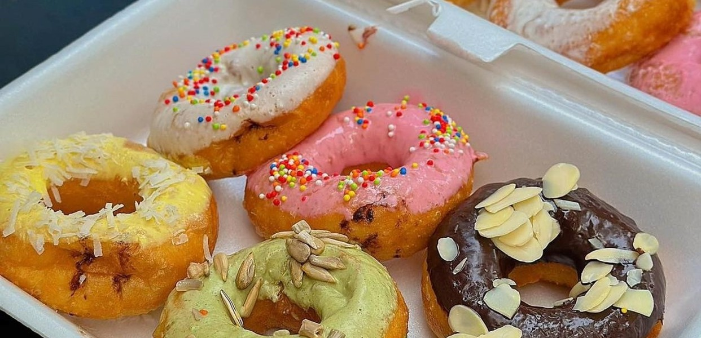
Không gian quán Bánh Donut Nga - Uliana ấm cúng và thoải mái, nhân viên phục vụ nhiệt tình và chu đáo. Đây là nơi lý tưởng để bạn cùng gia đình hoặc bạn bè thưởng thức những chiếc bánh donut ngon miệng, trò chuyện và thư giãn. Giá cả tại quán cũng rất hợp lý, phù hợp với nhiều đối tượng khách hàng. Nếu bạn có dịp ghé qua Hàn Mặc Tử, đừng quên dừng chân tại đây để trải nghiệm những chiếc bánh donut tuyệt vời.
- Địa chỉ: 42 Hàn Mặc Tử, P.7, Thành phố Vũng Tàu.
- Giờ mở cửa: 11:00 - 20:45
- Mức giá: 20.000 VNĐ - 50.000 VNĐ
Chikin House
Chikin House là một địa điểm lý tưởng tại Vũng Tàu dành cho những ai yêu thích món gà. Quán nổi bật với không gian thoải mái, sạch sẽ và phong cách trang trí hiện đại, tạo cảm giác dễ chịu cho thực khách. Món ăn tại Chikin House đa dạng, từ gà chiên giòn, gà nướng đến các món salad và snack, tất cả đều được chế biến tươi ngon và hấp dẫn.
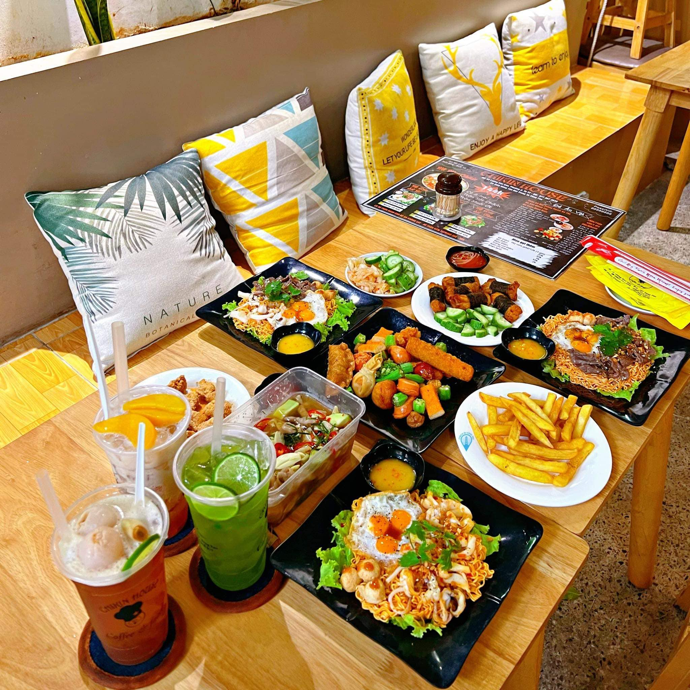
Nhân viên tại Chikin House luôn nhiệt tình và thân thiện, sẵn sàng phục vụ khách hàng một cách chu đáo. Giá cả tại quán rất hợp lý, phù hợp với nhiều đối tượng thực khách. Nếu bạn đang tìm kiếm một nơi để thưởng thức những món gà ngon và thư giãn cùng bạn bè hoặc gia đình, Chikin House chắc chắn là lựa chọn không thể bỏ qua.
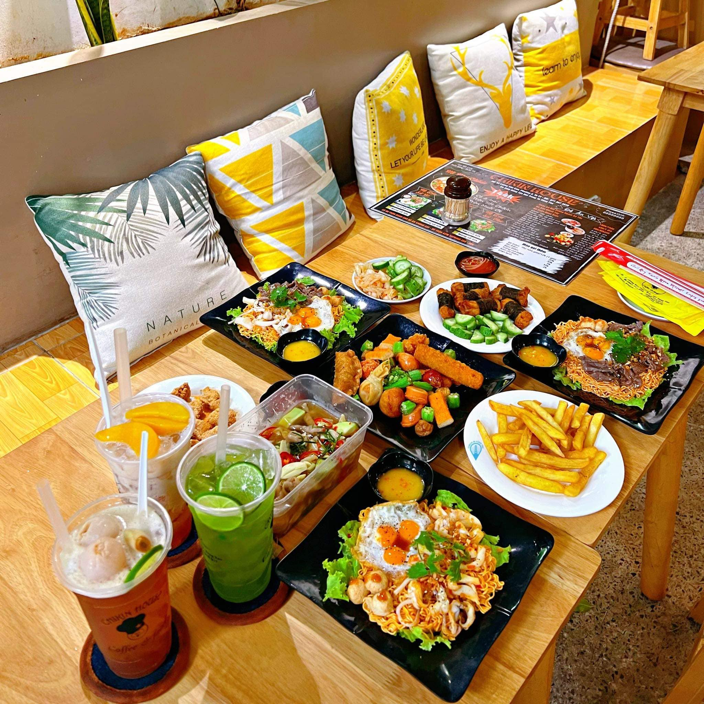
Nhân viên tại Chikin House luôn nhiệt tình và thân thiện, sẵn sàng phục vụ khách hàng một cách chu đáo. Giá cả tại quán rất hợp lý, phù hợp với nhiều đối tượng thực khách. Nếu bạn đang tìm kiếm một nơi để thưởng thức những món gà ngon và thư giãn cùng bạn bè hoặc gia đình, Chikin House chắc chắn là lựa chọn không thể bỏ qua.
- Địa chỉ: 52 Lương Văn Can, P.2, Thành phố Vũng Tàu.
- Giờ mở cửa: 08:00 - 21:45
- Mức giá: 40.000 VNĐ - 50.000 VNĐ